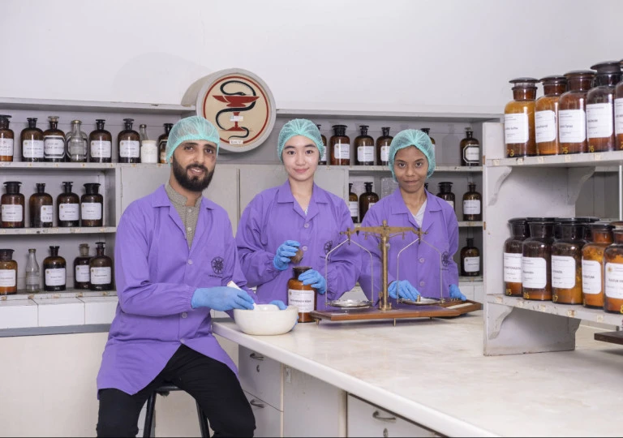

UNIVERSITAS GADJAH MADA
UNIVERSITAS GADJAH MADA

Hanya 5% Kampus RI Berorientasi Riset, Kegiatan Pengabdian Perlu Digalakkan
Tercatat lebih dari 4.000 perguruan tinggi yang ada di Indonesia diarahkan bergerak menjadi universitas riset dan memperkuat perannya dalam memberi solusi nyata bagi daerahnya. Pasalnya, baru sekitar 5 persen perguruan tinggi yang bisa bertransformasi menjadi universitas riset. Hal itu dikemukakan oleh Direktur Kelembagaan, Direktorat Jenderal Pendidikan Tinggi, Kementerian Pendidikan Tinggi, Sains, dan Teknologi (Kemendiktisaintek) RI, Mukhamad Najib, di acara Journalist Bootcamp Dikti 2025 bertajuk ”Sinergi Dikti dan Media untuk Kampus Berdampak” belum lama ini di Bogor. Pemerintah kini tengah mendorong perguruan tinggi untuk menyeimbangkan perannya di bidang pendidikan dengan penelitian dan pengabdian. Hal ini merupakan bagian dari visi pembangunan nasional dalam menguatkan peran perguruan tinggi di bidang riset serta pengabdian pada masyarakat. Menanggapi kondisi pendidikan tinggi sekarang ini, Dekan FMIPA UGM, Prof. Kuwat Triyana, mengatakan perguruan tinggi di Indonesia saat tengah berada pada uji relevansi. Pasalnya, sebagian anak muda ada yang menganggap kuliah di perguruan tinggi bukan menjadi pilihan utama. “Anak muda ini tidak lagi menganggap kuliah itu sebagai keputusan otomatis. Mereka lebih memilih jalur hidup lain, sepert kursus singkat, bootcamp, atau gigs economy,” jelasnya, Rabu (17/12). Kuwat menilai pada kondisi saat ini, pendidikan di Indonesia memiliki dua narasi yang berseberangan. Negara ingin menambah jumlah lulusan perguruan tinggi sebagai standar negara, sementara individu berpikir pragmatis, memperhitungkan baliknya modal pendidikan yang dikeluarkan. Selain itu, kurikulum di Indonesia masih tertinggal jauh dari negara lain. “Karena itu, fokus kampus tidak cukup pada transfer ilmu, tetapi harus menjadi ekosistem penempaan yang melatih kemampuan memecahkan masalah nyata,” terangnya. Menurut Kuwat, program pengabdian masyarakat perlu diterapkan oleh segenap perguruan tinggi di Indonesia. Sebab, hingga kini program pengabdian yang diterapkan di kampus-kampus di Indonesia masih jauh tertinggal. Menurut, Kuwat hal ini terjadi sebab insentif dan penerapannya masih lemah. “Jadi banyak pengabdian kepada masyarakat berhenti pada output administrasi, jumlah kegiatan, foto, laporan, dan ini belum sampai menyentuh pada outcome atau dampak yang terukur,” jelasnya.